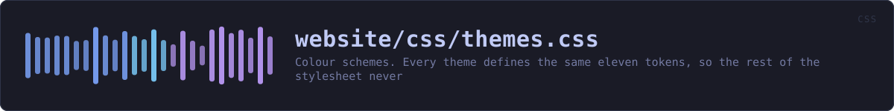

website/css/themes.css
the website's source · 174 lines · read it on GitHub
WHAT IT DOES
Colour schemes. Every theme defines the same eleven tokens, so the rest of the stylesheet never names a colour directly and adding a theme is a matter of adding one block here.
Tokyo Night is the default and is declared on :root so the page has correct colours before any JavaScript runs — including for readers who block it entirely. The others are opt-in via [data-theme] on <html>.
Each block also declares color-scheme, beside the colours it has to agree with. That is the one thing CSS custom properties cannot reach: the browser's native controls -- the theme <select>'s dropdown list, the verifier's <progress> bar, the file picker -- are drawn by the platform, and without this they are drawn light on a near-black page. Keeping it in the same block as the palette means a new theme cannot be added with the wrong one.
IN PLAIN WORDS
This is the list of colour schemes -- nine of them, twelve colours each.
Everything else on the site refers to colours by their job rather than by name: "the background", "a warning", "secondary text". That is why adding a whole new scheme means adding a block here and changing nothing else, and why the desktop application can offer exactly the same nine.
THE SECTIONS IT IS MADE OF
| Section | Line |
|---|